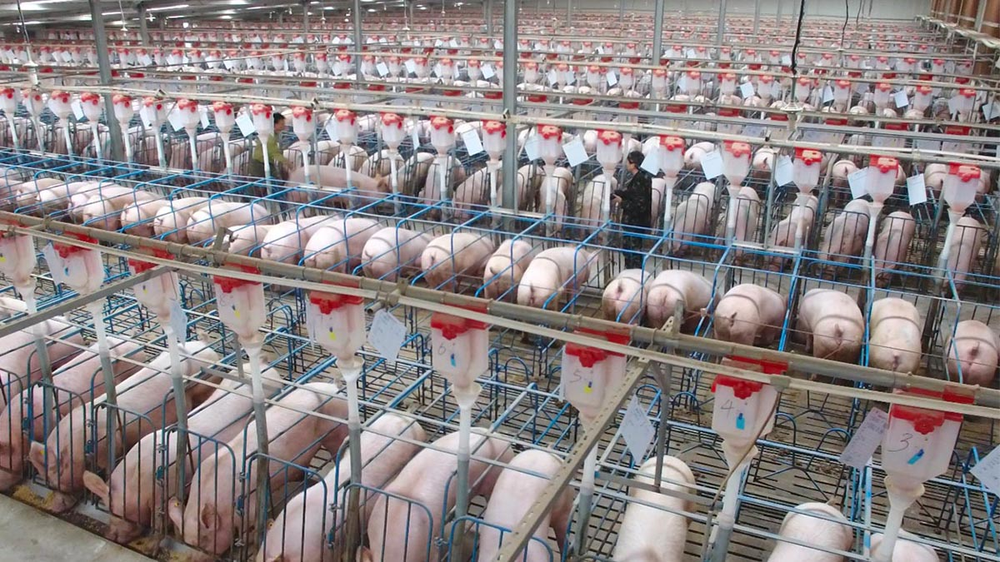
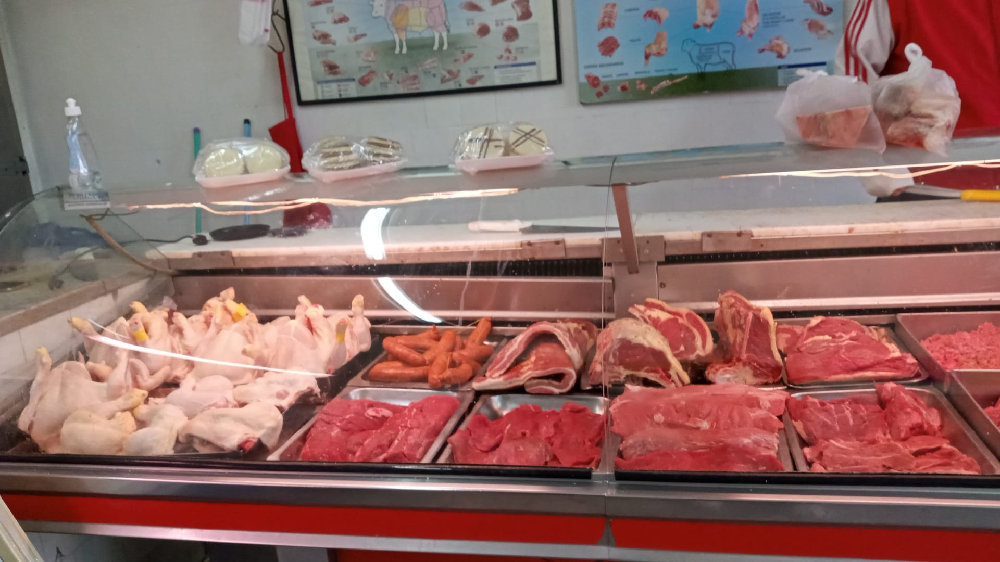
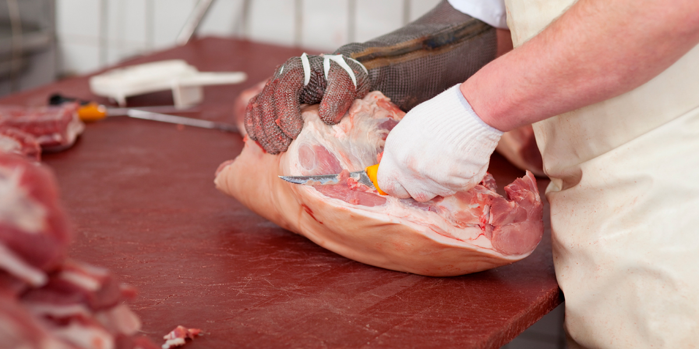

Granja de Crianza
Cuidamos nuestros animales en un ambiente natural y responsable.

Carne de primera calidad
Ofrecemos cortes frescos y seleccionados para su mesa.

Altos estándares de inocuidad
Procesos controlados que garantizan alimentos seguros.

Esmero y Dedicación
Nos esforzamos por ofrecer lo mejor a cada cliente.